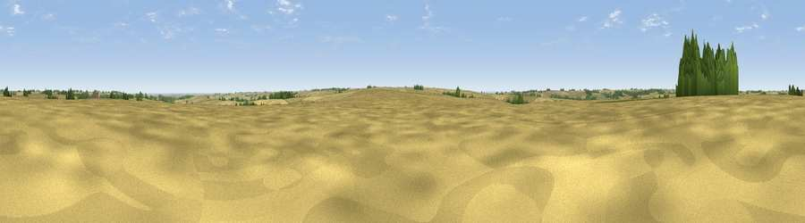

Viewpoint near Burgh on Bain
#29043 in England · top 50% of its area beats it · near Burgh on BainThe view, rendered

A 360° render of this exact spot computed from the terrain model, tree cover and land cover — summer colours, afternoon light, calibrated against photographs of famous viewpoints. Real trees, hedges and buildings will differ in detail.
The panorama
Grey silhouette: terrain skyline in each direction (720 bearings, Earth curvature and refraction included). Dashed green: skyline with trees (+15 m) and buildings (+8 m) as obstacles. Blue strip: how far the ground is visible on each bearing.
Where the view opens
Wedge length = distance to the farthest visible ground on that bearing (vegetation-aware). Rings at 10, 25 and 50 km.
What fills the view
90% cropland · 5% grassland · 4% woodland · 1% water
Angular shares of the visible panorama (visual magnitude), not map area. Landscape diversity 0.19 (0–1 Shannon).
Key numbers
More beautiful places nearby
The staircase of upgrades: each row has a higher view potential than everything closer. Driving times are estimates from straight-line distance, calibrated against real road routing — check an actual route before setting out.
| Place | Direction | Drive | Score |
|---|---|---|---|
| Pewlade Hill | S · 3 km | ~8 min | 47.4 |
| Flint Hill | E · 4 km | ~9 min | 51.9 |
| Viewpoint near Goulceby | S · 5 km | ~11 min | 56.9 |
| Viewpoint near Wold Newton | N · 11 km | ~21 min | 57.3 |
| Viewpoint near Fulletby | SSE · 13 km | ~23 min | 57.9 |
| Viewpoint near Tetford | SE · 13 km | ~24 min | 58.0 |
| Warden Hill | SE · 15 km | ~27 min | 59.5 |
| Viewpoint near Claxby | WNW · 16 km | ~28 min | 61.7 |
53.35544, -0.11185 · source: osm peak · position refined by local search. Computed location — check access rights before visiting.